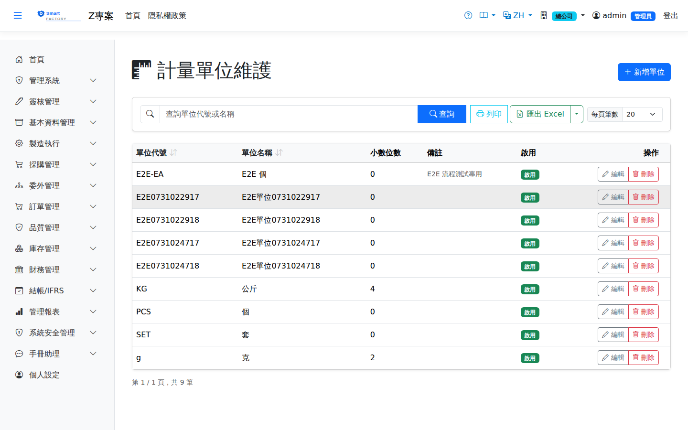

計量單位Unit of Measure
路由：/BAS/Uom | 計量單位代碼與單位換算率維護Route: /BAS/Uom | Unit of measure codes and conversion ratios
計量單位（Unit of Measure）定義系統中所有數量欄位的量測基準，例如件（PCS）、公斤（KG）、箱（BOX）。不同單位間可設定換算率，供採購/銷售以不同單位下單時自動換算庫存數量。Units of measure define the basis of every quantity field in the system — piece (PCS), kilogram (KG), box (BOX) and so on. Conversion ratios between units let the system convert stock quantities automatically when purchasing or selling in a different unit.

計量單位畫面截圖（示意，實際欄位/資料依權限與查詢條件而異）Unit of measure screenshot (illustrative; actual fields and data vary by permission and query criteria)
欄位說明Field reference
| 欄位名稱Field | 必填Required | 說明Guide |
|---|---|---|
| 計量單位代碼UOM Code | 必填Required | 唯一識別碼（例：PCS、KG、BOX、M）Unique code (e.g. PCS, KG, BOX, M) |
| 計量單位名稱UOM Name | 必填Required | 完整名稱（例：件、公斤、箱、公尺）Full name (e.g. piece, kilogram, box, metre) |
| 小數位數Decimal Places | 必填Required | 數量欄位允許的小數位數（PCS 通常填 0，KG 可填 3）Decimal places allowed in quantity fields (usually 0 for PCS, 3 for KG) |
| 備註Notes | 補充說明Notes | |
| 是否啟用Active | 停用後不可在新產品或單據中選取Once inactive, cannot be selected on new products or documents |
換算率設定Conversion setup
編輯計量單位後，切換至「換算率」分頁，可設定此單位與其他單位的換算比例。After opening a unit of measure, switch to the "Conversion" tab to set the conversion ratio to other units.
換算公式：Conversion formula: 目標單位數量 = 來源數量 × 分子 ÷ 分母Target quantity = source quantity × numerator ÷ denominator
| 欄位名稱Field | 必填Required | 說明Guide |
|---|---|---|
| 目標計量單位Target UOM | 必填Required | 換算的目標單位（例：BOX → PCS 中的 PCS）Target unit of the conversion (the PCS in BOX → PCS) |
| 分子（Numerator）Numerator | 必填Required | 換算比例的分子（例：1 BOX = 12 PCS，分子填 12）Numerator of the conversion ratio (1 BOX = 12 PCS, so enter 12) |
| 分母（Denominator）Denominator | 必填Required | 換算比例的分母（大部分情況填 1）Denominator of the conversion ratio (usually 1) |
換算率範例Conversion examples
| 來源單位From UOM | 目標單位To UOM | 分子Numerator | 分母Denominator | 說明Guide |
|---|---|---|---|---|
| BOX | PCS | 12 | 1 | 1 箱 = 12 件1 box = 12 pcs |
| KG | G | 1000 | 1 | 1 公斤 = 1000 克1 kg = 1000 g |
| M | CM | 100 | 1 | 1 公尺 = 100 公分1 metre = 100 cm |
操作步驟Steps
新增計量單位Adding a unit of measure
1
進入「基本資料 > 計量單位」，點「新增」。Go to "Basic Data > Unit of Measure" and click "Add".
2
填入代碼（如 PCS）、名稱（如 件）、小數位數。Enter the code (e.g. PCS), name (e.g. Piece) and decimal places.
3
點「儲存」完成新增。Click "Save" to finish.
設定換算率Setting conversion ratios
1
點擊計量單位列表中的代碼，開啟編輯側欄。Click a code in the unit of measure list to open the edit panel.
2
切換至「換算率」分頁，點「新增換算」。Switch to the "Conversion" tab and click "Add Conversion".
3
選擇目標單位，填入分子與分母後點「儲存」。Pick the target unit, enter the numerator and denominator, then click "Save".
採購時以「箱（BOX）」為單位，庫存以「件（PCS）」管理，需設定 BOX→PCS 換算率，系統才能自動計算進庫數量。When you buy in boxes (BOX) but hold stock in pieces (PCS), set a BOX→PCS conversion so the system can calculate the received quantity automatically.
注意：Note:小數位數設定後若修改，可能影響已有庫存數量的顯示精度，請在系統上線前確認完畢。 Changing the decimal places later may affect the display precision of existing stock quantities, so settle this before go-live.